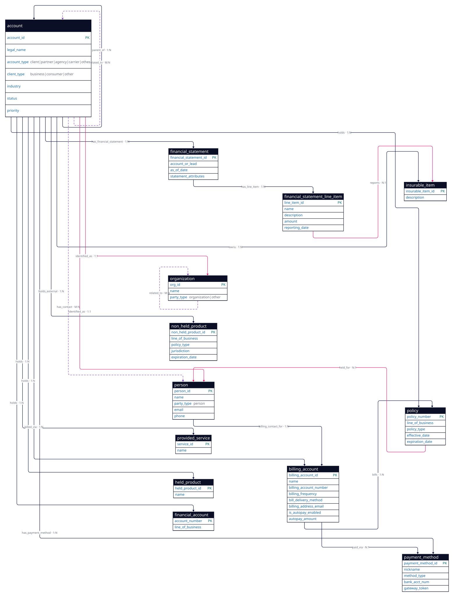

1 · Entities & Attributes (13 node types)
Each node is a Qubru :Entity with a type property. Every node also carries
attributes_json (free-form key/values — this is where Salesforce Attribute / Profile Attribute EAV lands).
pink = primary key / canonical identity.
| # | Entity type | Group | Salesforce source | Key attributes | Notes / collapsed-in |
|---|---|---|---|---|---|
| 1 | account | Parties | Account | account_id, legal_name, account_type (client|partner|agency|carrier|other), client_type (business|consumer|other), industry, status, priority | Collapses Client / Business / Consumer / Other Client → client_type; Other Account → account_type. |
| 2 | person | Parties | Contact | person_id, name, party_type (person), email, phone | The individual (driver, contact, owner). |
| 3 | organization | Parties | Company / Org / Other Group | org_id, name, party_type (organization|other) | ◆ party_type=other absorbs Other Party. |
| 4 | policy | Holdings | Insurance Policy (Asset) | policy_number, line_of_business, policy_type, effective_date, expiration_date | Policy__c deprecated → stored as Asset. |
| 5 | financial_account | Holdings | Financial Account (Asset) | account_number, line_of_business | FinancialAccount__c deprecated → Asset. |
| 6 | provided_service | Holdings | Provided Service (Asset) | service_id, name | A service held by the customer. |
| 7 | held_product | Holdings | Other Held Product or Service (Asset) | held_product_id, name | Any other held asset. |
| 8 | billing_account | Billing | BillingAccount__c | billing_account_id, name, billing_account_number, billing_frequency, bill_delivery_method, billing_address_email, is_autopay_enabled, autopay_amount | Full scope (ADR-035) — billing is IN. |
| 9 | payment_method | Billing | PaymentMethod__c | payment_method_id, nickname, method_type, bank_acct_num, gateway_token | Client payment method. |
| 10 | financial_statement | Financials | FinancialStatement__c | financial_statement_id, account_or_lead, as_of_date, statement_attributes | Point-in-time financials. |
| 11 | financial_statement_line_item | Financials | FinancialStatementLineItem__c | line_item_id, name, description, amount, reporting_date, class (income|expense|asset|liability) | Collapses Reported Income/Expense/Asset/Liability & Other Line Item → class. |
| 12 | non_held_product | Financials | NonHeldProduct__c | non_held_product_id, line_of_business, policy_type, jurisdiction, expiration_date | Products held elsewhere (full financial picture). |
| 13 | insurable_item | Financials | InsurableItem__c | insurable_item_id, description | An item that may need coverage (quote-ready). |
2 · Relationships (16 relationship types · 21 edges drawn)
Each is a Qubru :RELATES edge labelled with the verb. ◆ = added to close an audit gap.
holds fans from account to four holdings (same verb, four edges).
| # | From | Relationship | To | Card. | Notes |
|---|---|---|---|---|---|
| 1 | account | holds | policy | 1:N | Primary owner of the policy. |
| 2 | account | holds | financial_account | 1:N | Asset "part of / provided with". |
| 3 | account | holds | provided_service | 1:N | |
| 4 | account | holds | held_product | 1:N | |
| 5 | account | billed_via | billing_account | 1:N | Billing Account "primarily for" Account. |
| 6 | billing_account | bills | policy | 1:N | "used to bill for". |
| 7 | billing_account | paid_via | payment_method | N:1 | "used for payment of". |
| 8 | account | has_payment_method | payment_method | 1:N | "saved for / set up with". |
| 9 | person | billing_contact_for | billing_account | 1:N | |
| 10 | account | has_financial_statement | financial_statement | 1:N | |
| 11 | financial_statement | has_line_item | financial_statement_line_item | 1:N | "described by / defined for". |
| 12 | account | holds_external | non_held_product | 1:N | "owned by". |
| 13 | account | owns | insurable_item | 1:N | "owned by / subject of". |
| 14 | account | parent_of | account | 1:N | Account hierarchy (self-edge). |
| 15 | account | has_contact | person | M:N | ◆ collapsed from AccountContactRelation (roles on edge). |
| 16 | account | related_to | account | M:N | ◆ collapsed from PartyRelationship + PartyRelationshipType (type on edge). |
| 17 | policy | held_for | person | N:1 | ◆ NEW (gap-fix) — a holding is "for" a party/person, not just the account. |
| 18 | account | identified_as | person | 1:1 | ◆ NEW (gap-fix) — Account↔Party duality (B2C / sole-proprietor). |
| 19 | financial_statement_line_item | reports | insurable_item | N:1 | ◆ NEW (gap-fix) — the "Reported Insurable Item" line-item link. |
| 20 | account | identified_as | organization | 1:1 | ◆ organization wired in — Account↔Party duality (B2B). |
| 21 | organization | related_to | organization | M:N | ◆ organization wired in — corporate hierarchy (parent / subsidiary). |
16 distinct verbs: holds, billed_via, bills, paid_via, has_payment_method, billing_contact_for, has_financial_statement, has_line_item, holds_external, owns, parent_of, has_contact, related_to, held_for, identified_as, reports.
What collapsed into attributes (not nodes, not edges)
- Attribute (
Attribute__c) + Profile Attribute (AttributeAssignment__c) — the EAV pattern →attributes_jsonon the relevant node. - Client / Business Client / Consumer Client / Other Client →
account.client_type. - Other Account →
account.account_type. Other Party →organization.party_type = other. - Reported Income / Expense / Asset / Liability & Other Line Item →
financial_statement_line_item.class.
Source: faithful Salesforce view 2026-06-14-customer-model-commercial.html · graph view 2026-06-14-customer-model-in-qubru.html · mapping ratified in ADR-035.
3 · Diagram (rendered from D2 — 13 entities · 21 edges)
Code-based diagram (D2) of the exact same model in the tables above. Source: 2026-06-14-customer-model.d2 · pink = gap-fix edges · purple-dashed = collapsed-from-junction edges.
